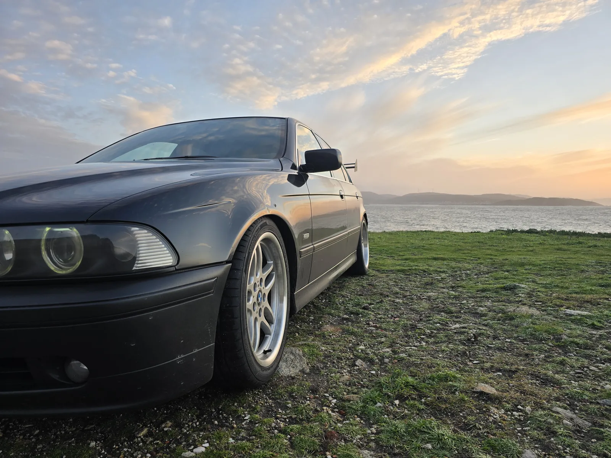
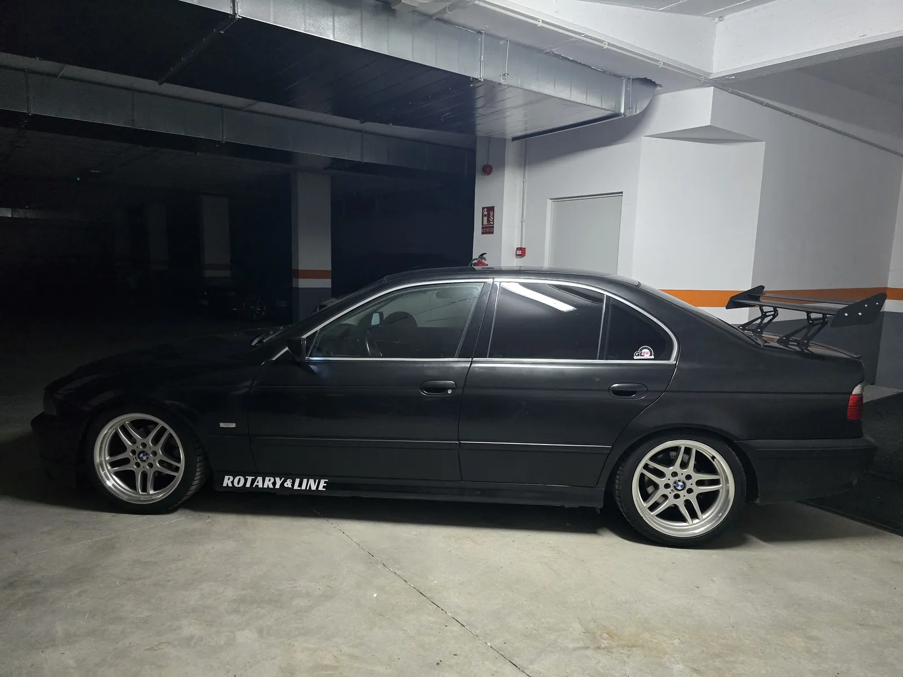
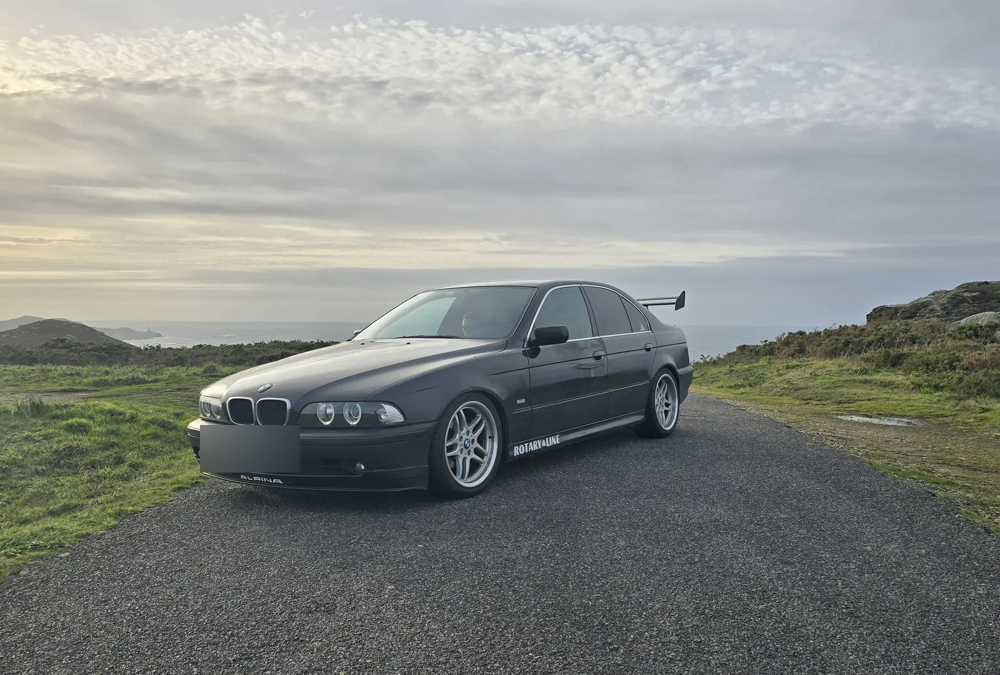
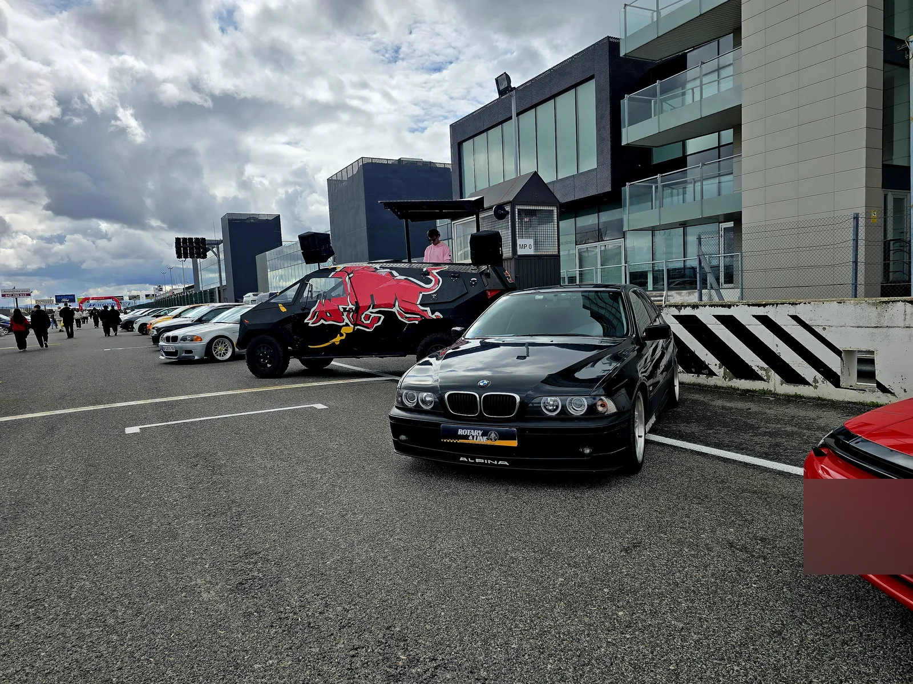
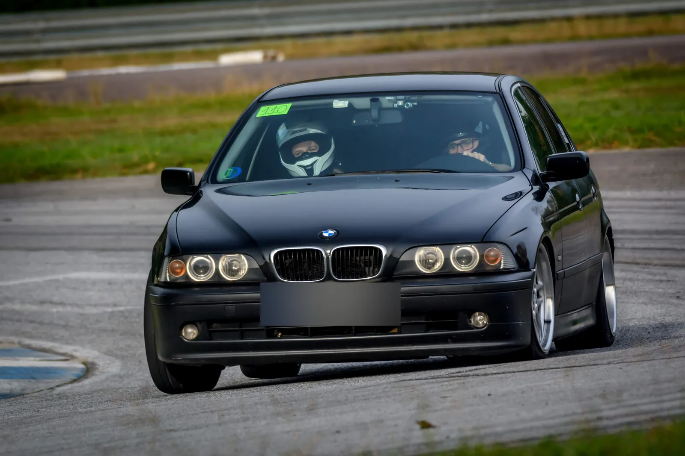
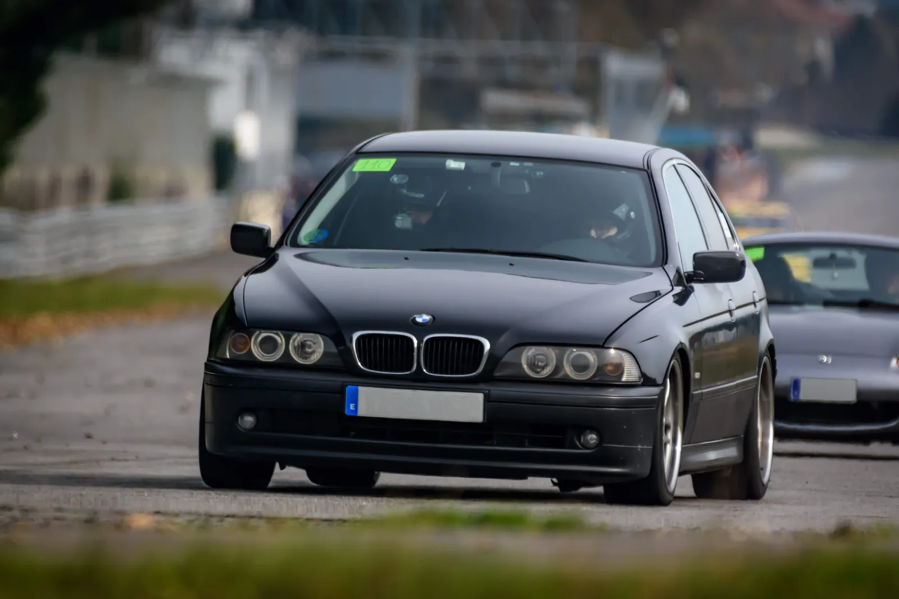
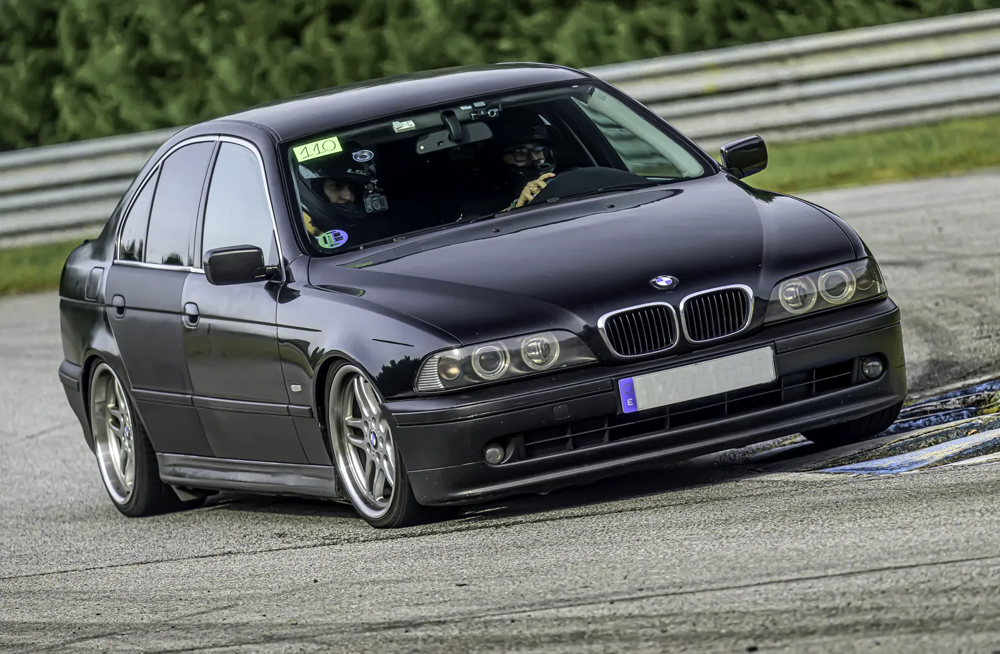
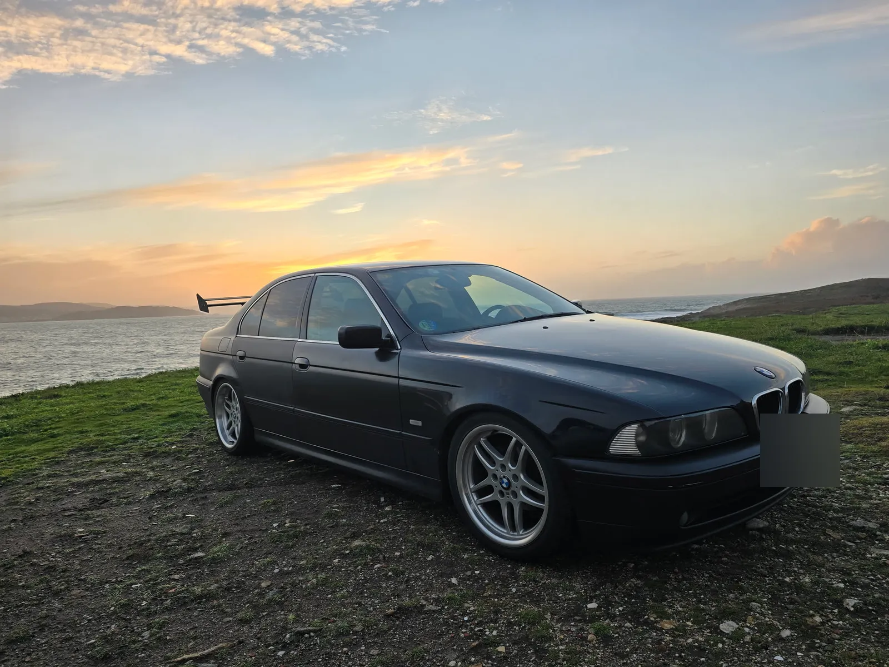

BMW E39
En línea · de Pepe «Omega»
Un coche para el día a día, para cruzar Europa y para gozarlo en circuito. Con 330.000 km y todo homologado.
El coche
Mi primer coche fue un Nissan Almera 1.6, sencillote y gracioso, y el primer coche potente que probé, porque antes conducía un Hyundai de mi padre. Cuando se estropeó, repararlo costaba más del doble que cambiarlo, y yo ya sabía lo que quería.
Quería un coche potente, asentado y cómodo para viajar, porque viajaba mucho. Hasta el control de crucero lo tenía clarísimo. Pero me gustaban los coches viejos, los que dan sensaciones: había probado muchos en el curro y uno demasiado nuevo, con dirección electrónica, no me gustaba. La estética de BMW me encantaba, y la del E39 me parece la línea más bonita de todas: empieza en el faro delantero y acaba en el trasero. Lo probé y me enamoró. Encontré una unidad lo bastante barata como para permitírmela, aunque luego el juego me salió muy caro, y desde entonces estoy con él, mejorándolo.
La filosofía es un coche apto para el día a día, que sabes que no se va a romper y aguanta trote, con el que te puedes hacer toda Europa y que, con la misma comodidad, puedes meter en un circuito y gozártelo. No tiene las prestaciones de un coche de circuito, porque pesa bastante, pero esa es la idea: que sea un placer cogerlo todos los días y que sirva tanto para viajar como para disfrutar.
Me ha intentado matar varias veces: con las ruedas de 225 que trae de serie es juguetón de narices. Me obligó a aprender mucha mecánica; si hoy estoy en la mecánica, siendo sinceros, es gracias a este coche. Estuvo en mi boda, y ha vivido una ruptura y la reconciliación con la que hoy es mi mujer. Ha visto peleas, amistades nuevas y amistades perdidas. Ha acompañado la parte más activa de mi juventud, y por eso se queda conmigo.
Ficha
- Versión
- BMW 520i de origen
- Motor
- M54B22, con muchos retoques (de origen llevaba un M52B20)
- Potencia
- Entre 170 y 220 CV; depende también del GLP
- Año
- Diciembre de 2002
- Color
- Negro
- Kilómetros
- 330.000
- Modificaciones
- GLP
- Suspensión KW regulable
- Barra de torretas regulable
- Llantas réplica, con las medidas del M5: 235/40 R18 delante y 275/35 R18 detrás
- Frenos del 530 en lugar de los del 520
- Alerón y lip Alpina
- Colectores Schmiedmann, final con X-pipe y unión hecha por Alejo (@alemet.es)
- Dos centralitas y una pequeña optimización electrónica (mapa suave, no una repro)
- Electroventilador de Land Rover y radiador aparte para el agua
- Bujías de cuatro chispas
- Radio con Android Auto
- Todo homologado
- Próximos planes
- Pintura y vinilo
- Caja de seis marchas y diferencial autoblocante
- Radiador de aceite y catch can
- A muy largo plazo, si salen las cuentas: abrir el motor, dejarlo fino y ponerle un compresor (no un turbo) para llegar a 500 CV
Galería








